UDN
Search public documentation:
UsingSkeletalControllersJP
English Translation
中国翻译
한국어
Interested in the Unreal Engine?
Visit the Unreal Technology site.
Looking for jobs and company info?
Check out the Epic games site.
Questions about support via UDN?
Contact the UDN Staff
中国翻译
한국어
Interested in the Unreal Engine?
Visit the Unreal Technology site.
Looking for jobs and company info?
Check out the Epic games site.
Questions about support via UDN?
Contact the UDN Staff
骨格コントローラを使用する
- 骨格コントローラを使用する
- 概要
- SkelControl ノード
- 新たな SkelController を追加する
- 既存の SkelController を編集する
- 連結化と共有化
- UnrealScript で SkelControl ノードを参照する
- SkelControl のプロパティ
- Limb (四肢)
- 反動 (recoil)
- 単一のボーン
- SkelControlSingleBone
- SkelControl_Handlebars
- SkelControl_Multiply
- SkelControl_TwistBone
- SkelControlWheel
- UDKSkelControl_Damage / UTSkelControl_Damage
- UDKSkelControl_DamageHinge / UTSkelControl_DamageHinge
- UDKSkelControl_DamageSpring / UTSkelControl_DamageSpring
- UDKSkelControl_HoverboardSuspension / UTSkelControl_HoverboardSuspension
- UDKSkelControl_HoverboardSwing / UTSkelControl_HoverboardSwing
- UDKSkelControl_HoverboardVibration / UTSkelControl_HoverboardVibration
- UDKSkelControl_HugGround / UTSkelControl_HugGround
- UDKSkelControl_PropellerBlade
- UDKSkelControl_Rotate / UTSkelControl_Rotate
- UDKSkelControl_SpinControl / UTSkelControl_SpinControl
- UDKSkelControl_TurretConstrained / UTSkelControl_TurretConstrained
- UDKSkelControl_VehicleFlap
- UTSkelControl_CicadaEngine
- UTSkelControl_JetThruster
- UTSkelControl_MantaBlade
- UTSkelControl_MantaFlaps
- UTSkelControl_Oscillate
- 未分類事項
- ダウンロード
概要
SkelControl ノード

- SkelController (骨格コントローラ) ノードの名前、および、ユーザーによって設定された SkelController の名前です。
- この SkelController のための出力コネクタです。
- strength (強さ) のスライダーです。SkelController の強さをセットすることができます。
- 強さのブレンドを上げ下げするトグル (切り替え) です。そのためには、SkelController ノードで定義される Blend In Time (ブレンドイン時間) と Blend Out Time (ブレンドアウト時間) を使用します。
- この SkelController のための入力コネクタです。
- SkelController の現在の強さです。
新たな SkelController を追加する
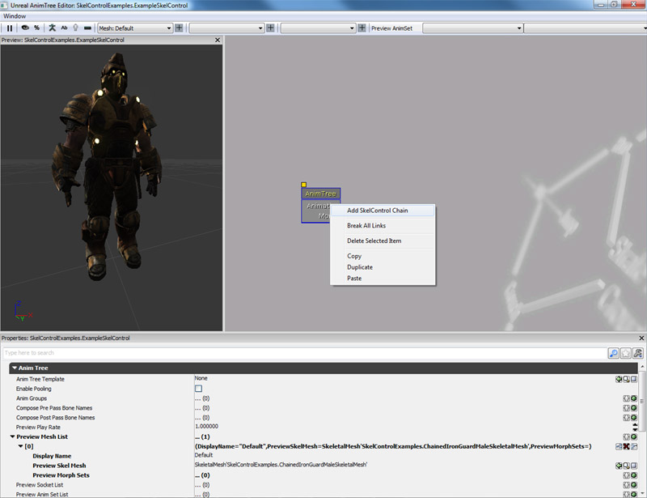
2. コンボボックスが表示され、そこから制御したいボーンを選択することができます。なお、ボーン 1 つにつき、コントロールチェーンは 1 つしか使えないことに注意してください。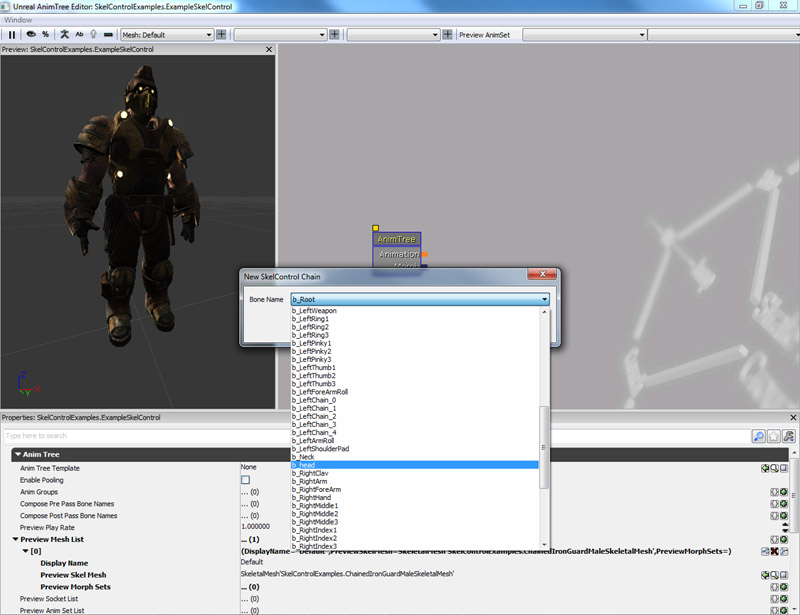
3. Head bone (頭蓋骨) を選択すると、AnimTree 内に Head (ヘッド) というラベルが付いた緑色のコネクタが表示されます。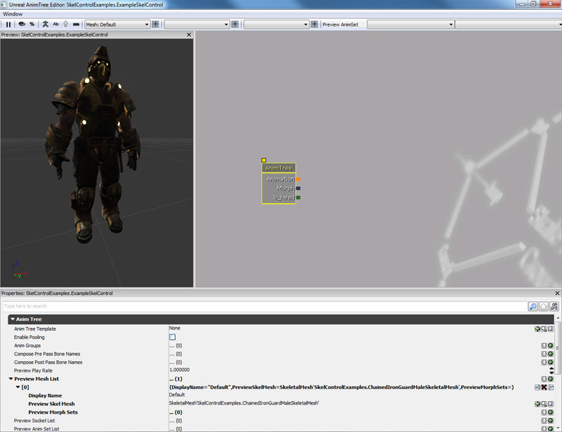
4. バックグラウンドを右クリックして新たな SkelControlLookAt を作成します。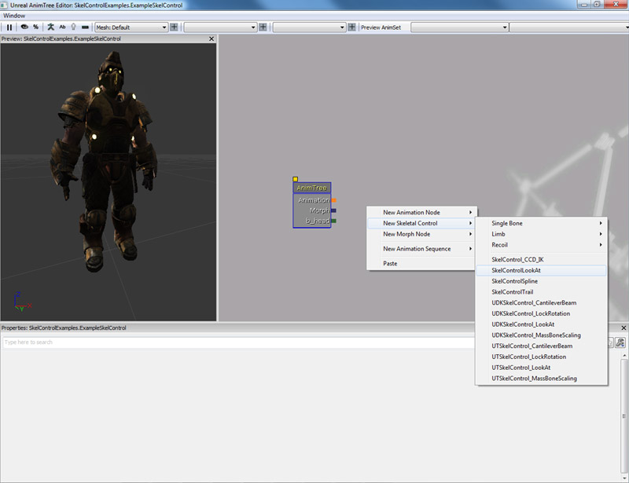
5. SkelControlLookAt を Head コネクタに接続します。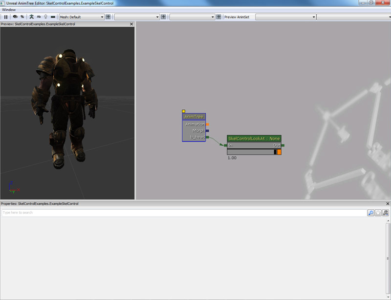
既存の SkelController を編集する
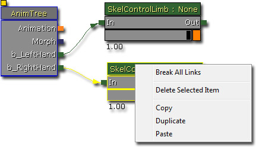
連結化と共有化
UnrealScript で SkelControl ノードを参照する
var SkelControl ASkelControl;
var() Name ASkelControlName;
simulated event PostInitAnimTree(SkeletalMeshComponent SkelComp)
{
Super.PostInitAnimTree(SkelComp);
if (SkelComp == Mesh)
{
ASkelControl = Mesh.FindSkelControl(ASkelControlName);
}
}
simulated event Destroyed()
{
Super.Destroyed();
ASkelControl = None;
}
SkelControl のプロパティ
あらゆる SkelControl に共通するプロパティがいくつかあります。- Control Name - 特定の SkelControl をコードから検索して修正するために、プログラマーが使用する名前です。
- Control Strength - 現在の SkelControl の強さです。
- Blend In Time - SkelControl がブレンドインするのに要する時間です。(単位 : 秒)。
- Blend Out Time - SkelControl がブレンドアウトするのに要する時間です。(単位 : 秒)。
- Blend Type - ブレンドの仕方を指定します。
- ABT_Linear - ブレンド時に線形補間を実行します。 Wiki
- ABT_Cubic - ブレンド時にキュービック補間を実行します。 Wiki
- ABT_Sinusoidal - ブレンド時に正弦波補間を実行します。 Wiki
- ABT_EaseInOutExponent2 - ブレンド時に「インビトウィーニング」補間を実行します。 Wiki
- ABT_EaseInOutExponent3 - ブレンド時に「インビトウィーニング」補間を実行します。 Wiki
- ABT_EaseInOutExponent4 - ブレンド時に「インビトウィーニング」補間を実行します。 Wiki
- ABT_EaseInOutExponent5 - ブレンド時に「インビトウィーニング」補間を実行します。 Wiki
- Post Physics Controller - 当該の SkelControl が、物理パスの後に適用されます。
- Set Strength From Anim Node - true の場合は、制御の強さが指定された AnimNode (複数も) と同じになります。これによって、ノードとコントローラ間の移行が容易になります。
- Controlled By Anim Metadata - true の場合は、ウエイトのデフォルト値が 0 に設定されるとともに、アニメーションのメタデータが、アニメーションのウエイトに基づいて、ノードを有効にします。
- Invert Metadata Weight - true の場合は、ウエイトのデフォルト値が 1 に設定されるとともに、メタデータが 0 にセットすることによって、骨格コントローラを無効にします。
- Propagate Set Active - true の場合は、当該の SkelControl がアクティブになると、チェーン内の次の SkelControl もアクティブになります。
- Strength Anim Node Name List - SkelControl の制御の強さを設定するために問い合わされるアニメーションノードのリストです。これは、 Set Strength From Anim Node (アニメーションノードから強さを設定する) といっしょに使用します。
- Bone Scale - SkelControl が機能しているボーン、および、すべての子ボーンに対して、スケーリングを適用することができます。
- Ignore When Not Rendered - メッシュが現在レンダリングされていない場合は、当該の SkelControl が適用されません。
- Ignore At Or Above LOD - アクタの LOD がこの値を超えている場合は、SkelControl が無効になります。
- BCS_WorldSpace - ワールド内の位置として指定します。
- BCS_ActorSpace - アクタの原点を基準とします。
- BCS_ComponentSpace - Skeletal Mesh Component (骨格メッシュコンポーネント) の原点を基準とします。
- BCS_ParentBoneSpace - SkelControl が制御しているボーンがもつ親のボーンの基準座標系を基準とします。
- BCS_BoneSpace - SkelControl が制御しているボーンを基準とします。
- BCS_OtherBoneSpace - 骨格の階層においてユーザーによって指定された他のボーンを基準とします。(SkelControl 内に BoneName というオプションがあり、ボーンを指定することができます)。
Limb (四肢)
SkelControlLimb
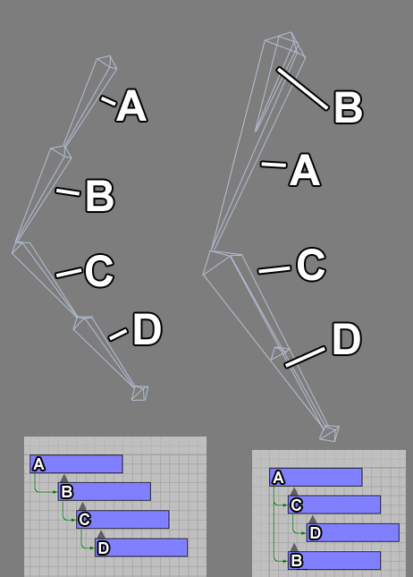
左側にあるボーンは、3D のパッケージで典型的なものですが、リアルタイムの骨格制御にとっては非効率です。この腕チェーンにおいて、IK (インバース キネマティクス) を使用すれば、IK チェーンが 4 つのボーンから構成されることになります。ところが、下図の右に示されているように、2 つのボーンだけで済ますことができます。この両方の状況において、ロールボーンは、アームボーンの子となります。両者の違いは、左図の方が、上腕から手まで 4 つのボーンが連続した階層であり、右図の方が、上腕から手まで 2 つのボーンから構成される階層になっていることです。
プロパティ
- Effector Location - 制御されるボーンの望ましい位置です。
- Effector Location Space - Effector Location が定義される空間です。
- Effector Space Bone Name - Effector Location Space が BCS_OtherBoneSpace である場合、このプロパティの値がボーンの名前として使用されます。
- Joint Target Location - ジョイントが曲げられたときに動く方向の、空間内における位置です。
- Joint Target Location Space - Joint Target Location が定義される空間です。
- Joint Target Space Bone Name - Joint Target Location Space が BCS_OtherBoneSpace である場合、このプロパティの値がボーンの名前として使用されます。
- Bone Axis - ボーンに沿った方向を向いている、libm 内のボーンの軸です。
- Joint Axis - ジョイントの軸に合わせるべきボーンの軸です。したがって、肘 (ひじ) に関しては、肘が曲がるときの軸でなければなりません。
- Invert Bone Axis - BoneAxis ベクターが反転 (invert) される必要があるかどうかを指定します。
- Invert Joint Axis - Joint Axis ベクターが反転される必要があるかどうかを指定します。
- Maintain Effector Rel Rot - true の場合は、終端エフェクタボーンとその親ボーン間の相対的な回転を変更します。false の場合は、終端ボーンの回転が、コントローラによって変更されません。
UnrealScript で使用する方法
以下の例では、SkelControlLimb を使って、単純なアニメーションを作っています。(ポーンがバーベルを持ち上げます)。 SkelControlLimb を使って、ワールド空間のある位置を、両手の目的地としてセットします。動的なトリガーが使用されて、両手が動いていくべき位置がマークされます。Matinee を使用してバーベルが上下に動く際、動的なトリガーは、アタッチされているため、いっしょに動きます。ティック 1 回につき 1 度、SkelControlLimbs が更新されます。その際、 Effector Location が、動的なトリガーと同じ位置にセットされます。
class SkelControlLimbPawn extends Pawn
Placeable;
var(SkelControl) Name LeftArmSkelControlName;
var(SkelControl) Name RightArmSkelControlName;
var(SkelControl) Actor LeftArmAttachment;
var(SkelControl) Actor RightArmAttachment;
var SkelControlLimb LeftArmSkelControl;
var SkelControlLimb RightArmSkelControl;
simulated event PostInitAnimTree(SkeletalMeshComponent SkelComp)
{
Super.PostInitAnimTree(SkelComp);
if (SkelComp == Mesh)
{
LeftArmSkelControl = SkelControlLimb(Mesh.FindSkelControl(LeftArmSkelControlName));
RightArmSkelControl = SkelControlLimb(Mesh.FindSkelControl(RightArmSkelControlName));
}
}
simulated event Destroyed()
{
Super.Destroyed();
LeftArmSkelControl = None;
RightArmSkelControl = None;
}
simulated event Tick(float DeltaTime)
{
Super.Tick(DeltaTime);
if (LeftArmSkelControl != None && LeftArmAttachment != None)
{
LeftArmSkelControl.EffectorLocation = LeftArmAttachment.Location;
}
if (RightArmSkelControl != None && RightArmAttachment != None)
{
RightArmSkelControl.EffectorLocation = RightArmAttachment.Location;
}
}
defaultproperties
{
Begin Object Class=SkeletalMeshComponent Name=PawnMesh
End Object
Mesh=PawnMesh
Components.Add(PawnMesh)
Physics=PHYS_Falling
Begin Object Name=CollisionCylinder
CollisionRadius=+0030.0000
CollisionHeight=+0072.000000
End Object
}
SkelControlFootPlacement
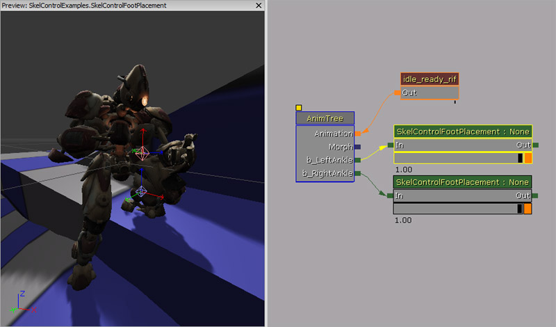
プロパティ
- Foot Offset - 生成された Effector Location に適用されて、ラインテストに沿って引き戻すためのオフセットです。足のボーンは通常、足の底面にはないため、このオフセットによって、グランド上での足の高さを調整することができます。
- Foot Up Axis - Orient Foot To Ground が true の場合に、サーフェス法線に合わせるべき足のボーンの軸です。
- Foot Rot Offset - Orient Foot To Ground である場合に、足に適用される付加的な回転です。足のボーンに上向きの軸がない場合に、必須とすることができます。
- Invert Foot Up Axis - Foot Up Axis を反転させるべきか否かを指定します。
- Orient Foot To Ground - 足のボーンを回転させることによって、ラインチェックでヒットしたサーフェス法線に合わせる必要があるか否かを指定します。
- Max Up Adjustment - SkelControl によって足が上に動かされるときの最大量です。
- Max Down Adjustment - SkelControl によって足が下に動かされるときの最大量です。
- Bone Axis - ボーンが伸びている方向に合わせるべき、グラフィカルなボーンの軸です。
- Joint Axis - ジョイントのヒンジ軸に合わせるべき、グラフィカルなボーンの軸です。
- Invert Bone Axis - ボーンの変形 (transform) を作成する際に Bone Axis を反転させる場合は、true をセットします。
- Invert Joint Axis - ボーンの変形 (transform) を作成する際に Joint Axis を反転させる場合は、true をセットします。
- Rotate Joint - 新たな行列を作るのではなく、ジョイントボーンの回転 ( Rotate Joint bone) を試みます。
- Maintain Effector Rel Rot - true の場合は、終端エフェクタ ボーンとその親のボーン間における相対的な回転を修正します。 false の場合は、終端ボーンの回転が、コントローラによって変更されません。
- Take Rotation From Effector Space - true の場合は、エフェクタボーンの回転が、 EffectorSpaceBoneName によって指定されたボーンからコピーされます。
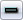
をクリックすると、フロアのメッシュが表示されます。フロアを移動および回転させるには、Ctrl キーを押しながら次のボタンを使用します。- 左マウスボタン - X および Y 軸に沿ってフロアを平行移動させます。
- 右マウスボタン - Z 軸を中心にフロアを回転させます。
- 左 + 右マウスボタン - Z 軸に沿ってフロアを平行移動させます。
高度な足の配置
足の配置 SkelController ノードによって、たいていのことには対処できます。ただし、シーンに応じてうまく機能させるためには、足の配置 SkelController ノードを調整または変更しなければならない場合もしばしばあります。メッシュのオフセット
アニメーションは、平らなグラウンドでオーサリングされます。したがって、キャラクターがグラウンドよりも高いものに足を運ぶ場合、足配置のコードによって足が持ち上げられ、万事良好に見えるようになります。さてここで、コリジョンがアニメートされたグランドレベルよりも下で生じた場合 (例 : 階段を降りる場合)、足が空中に浮いたままになるか、脚を下に踏み出そうとして伸びすぎてしまうことになります。これは見苦しいです。そこで、通常は、ゲームコードが両足から実際のフロアまでの最短距離を見つけ、そのオフセットでメッシュを移動させることになります。その際、補間をいくらか行うと、よりスムーズに見えるようになるでしょう。このようなコードの例は、「Unreal Tournament 3」のソースコードである AUTPawn::DoFootPlacement in UTPawn.cpp にあります。 --> ご覧のように、ポーンは、ポーンのコリジョンによって配置され、正しいレベルに置かれています。ただし、ポーンが浮かんでいるように見える場合があるということにもなります。そのような場合を修正するには、メッシュを平行移動させることによって、強制的に下げます。それ以降は、足配置が残りの処理を担当します。 この方法は、スロープでも有効です。
この方法は、スロープでも有効です。
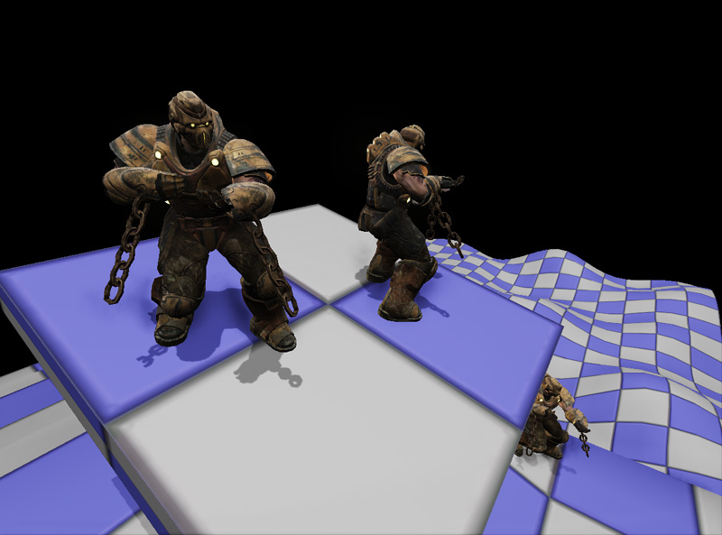
コードのロジックは、下に向かってトレースを実行するに過ぎません。その際、左足および右足のボーンにアタッチされているソケットの X および Y の位置を使用します。Z の位置は、ポーンが立っているフロアをトレースが突き抜けないようにするためのポーンの位置です。ヒットの位置が分かると、メッシュの平行移動ベクターが適切に計算されて、メッシュに渡されます。フロアが検知されなかった場合 (ポーンは泳いでいるのでしょうか) は、メッシュの平行移動が、このティックで適用されません。ポーンが落下している場合は、このプロセス全体も中止されます。
class AdvancedFootPlacementPawn extends Pawn
Placeable;
var(FootPlacement) float FootTraceRange;
var(FootPlacement) Name LeftFootSocketName;
var(FootPlacement) Name RightFootSocketName;
var(FootPlacement) float TranslationZOffset;
var(FootPlacement) Name LeftFootPlacementSkelControlName;
var(FootPlacement) Name RightFootPlacementSkelControlName;
var SkelControlFootPlacement LeftFootPlacementSkelControl;
var SkelControlFootPlacement RightFootPlacementSkelControl;
simulated function EnableLeftFootPlacement()
{
SetSkelControlActive(LeftFootPlacementSkelControl, true);
}
simulated function DisableLeftFootPlacement()
{
SetSkelControlActive(LeftFootPlacementSkelControl, false);
}
simulated function EnableRightFootPlacement()
{
SetSkelControlActive(RightFootPlacementSkelControl, true);
}
simulated function DisableRightFootPlacement()
{
SetSkelControlActive(RightFootPlacementSkelControl, false);
}
simulated function SetSkelControlActive(SkelControlBase SkelControl, bool IsActive)
{
if (SkelControl != None)
{
SkelControl.SetSkelControlActive(IsActive);
}
}
simulated event PostInitAnimTree(SkeletalMeshComponent SkelComp)
{
Super.PostInitAnimTree(SkelComp);
if (SkelComp == Mesh)
{
LeftFootPlacementSkelControl = SkelControlFootPlacement(Mesh.FindSkelControl(LeftFootPlacementSkelControlName));
RightFootPlacementSkelControl = SkelControlFootPlacement(Mesh.FindSkelControl(RightFootPlacementSkelControlName));
}
}
simulated event Destroyed()
{
Super.Destroyed();
LeftFootPlacementSkelControl = None;
RightFootPlacementSkelControl = None;
}
simulated event Tick(float DeltaTime)
{
local Vector LeftFootHitLocation, LeftFootHitNormal, LeftFootTraceEnd, LeftFootTraceStart;
local Vector RightFootHitLocation, RightFootHitNormal, RightFootTraceEnd, RightFootTraceStart;
local Vector DesiredMeshTranslation;
local Rotator SocketRotation;
local Actor LeftFootHitActor, RightFootHitActor;
Super.Tick(DeltaTime);
if (Mesh == None || Physics == PHYS_Falling)
{
return;
}
Mesh.GetSocketWorldLocationAndRotation(LeftFootSocketName, LeftFootTraceStart, SocketRotation);
LeftFootTraceStart.Z = Location.Z;
LeftFootTraceEnd = LeftFootTraceStart - (Vect(0.f, 0.f, 1.f) * FootTraceRange);
// Trace down to find the position for the left foot
ForEach TraceActors(class'Actor', LeftFootHitActor, LeftFootHitLocation, LeftFootHitNormal, LeftFootTraceEnd, LeftFootTraceStart,,, TRACEFLAG_Bullet)
{
// Block if we've hit world geometry
if (LeftFootHitActor.bWorldGeometry || LeftFootHitActor.IsA('InterpActor'))
{
break;
}
}
// Trace down to find the position for the right foot
Mesh.GetSocketWorldLocationAndRotation(RightFootSocketName, RightFootTraceStart, SocketRotation);
RightFootTraceStart.Z = Location.Z;
RightFootTraceEnd = RightFootTraceStart - (Vect(0.f, 0.f, 1.f) * FootTraceRange);
// Trace down to find the position for the right foot
ForEach TraceActors(class'Actor', RightFootHitActor, RightFootHitLocation, RightFootHitNormal, RightFootTraceEnd, RightFootTraceStart,,, TRACEFLAG_Bullet)
{
// Block if we've hit world geometry
if (RightFootHitActor.bWorldGeometry || RightFootHitActor.IsA('InterpActor'))
{
break;
}
}
// Not in range to touch the ground
if (LeftFootHitActor == None && RightFootHitActor == None)
{
return;
}
if (LeftFootHitActor != None && RightFootHitActor == None)
{
DesiredMeshTranslation.Z = (LeftFootHitLocation.Z - Location.Z) + Mesh.default.Translation.Z + TranslationZOffset;
}
else if (LeftFootHitActor == None && RightFootHitActor != None)
{
DesiredMeshTranslation.Z = (RightFootHitLocation.Z - Location.Z) + Mesh.default.Translation.Z + TranslationZOffset;
}
else
{
// Adjust the desired mesh translation
if (LeftFootHitLocation.Z < RightFootHitLocation.Z)
{
DesiredMeshTranslation.Z = (LeftFootHitLocation.Z - Location.Z) + Mesh.default.Translation.Z + TranslationZOffset;
}
else
{
DesiredMeshTranslation.Z = (RightFootHitLocation.Z - Location.Z) + Mesh.default.Translation.Z + TranslationZOffset;
}
}
// Set the mesh translation
Mesh.SetTranslation(DesiredMeshTranslation);
}
defaultproperties
{
LeftFootSocketName="LeftFootSocket"
RightFootSocketName="RightFootSocket"
FootTraceRange=96.f
Begin Object Class=SkeletalMeshComponent Name=PawnMesh
End Object
Mesh=PawnMesh
Components.Add(PawnMesh)
Physics=PHYS_Falling
Begin Object Name=CollisionCylinder
CollisionRadius=+0030.0000
CollisionHeight=+0072.000000
End Object
}
動いている間の足配置
動いている場合 (じっと立っている場合だけではなく) の足配置を実現する 1 つの方法としては、足のボーンとアニメートされたグラウンドのレベル (これは通常、Root Bone (ルートボーン) の位置によって表わされます) の間のオフセット (高さの) を考慮に入れるというやり方があります。ここで、Foot Bone (足のボーン) を、実際にグラウンドがある位置に動かさず、Foot Bone にオフセットを加えます。(アニメート化されたグラウンドの高さと実際のグラウンドの高さの間の差分を加えることになります)。これで、アニメーションによって脚が正しく上がり、ワールドをたどるようになります。出来映えを向上させるには、少しばかり補間や、スムージング、またメッシュのオフセットが必要となります。ただし、この方法は、導入するのにかなりシンプルなソリューションであり、うまく機能します。 システムは、足の真下のグラウンドレベルをモニタするため、ラグが少しばかり発生する傾向にあります。これを改善する 1 つの方法としては、足が着地する場所を予測するというやり方があります。ただし、そのためには、移動のアニメーションを分析して足の着地点を正しく予測する複雑なシステムが実装される必要があります。次のスクリーンショットは、「Gears of War 2」のコードを使用してプロトタイプされたシステムのものです。
Floor Conforming (フロアとの整合)
Floor Conforming (フロアとの整合) とは、キャラクターまたはその足 (またはその両方) をスロープに対して正しい方向に向けることによって、足がスロープと平行に動くようにすることです。これを簡単に実現するには、キャラクターの骨格に IK Foot Bone Setup (インバース キネマティクス 足ボーンの設定) を置きます。基本的に、IK Foot Root ボーンは、Root Bone から由来し、IK Foot Right ボーンと IK Foot Left ボーンは、アニメーションの毎フレームにおいて、足のボーンと正確に一致します。さらに、IK Foot Root ボーンを平行移動および回転させることによって、スロープの方向に対して足の動きを正しく方向づけることが容易になります。ここでも、スムーズに仕上げるには、若干の補間とメッシュのオフセットが必要となります。さらに、メッシュ全体を回転させることによって、スロープおよびスロープの変化に対してキャラクターの胴体を調整して、より自然に仕上げることができます。(動いているときはスロープにややのめり込むようにし、止まっているときはやや反り返るようにします)。空間内で所定の地点をキャラクターに狙わせたままにさせておくために、メッシュの回転分を相殺するのは、非常に簡単です。次のスクリーンショットは、「Gears of War 2」のコードを使用してプロトタイプされたシステムのものです。
動くベース
キャラクターが動くベース (Mover とも言われます) の上に立っている場合、その Mover が回転すると、キャラクターはスライドし、完全に地面から離れているように見えてしまいます。上記で解説した Floor Conforming (フロアとの整合) は役に立ちますが、それでもキャラクターがベースに対してスライドして、足がまったく接地していないように見えてしまいます。なぜこのようなことが起きるのでしょうか? その原因は、ポーンのコリジョンのために、AABB (軸並行境界ボックス) を「Unreal」が使用していることにあります。そのため、そのボックスは Mover とともに回転しないのです。さらに悪いことには、Mover が回転すると、ボックスが上下に押されてしまいます。しかし、ちょっとした計算をすることによって、足の位置を算出して、必要な埋め合わせをすることが可能です。また、その際に Mover がポーンよりも前にティックされなければなりません。次のスクリーンショットは、「Gears of War 2」のコードを使用してプロトタイプされたシステムのものです。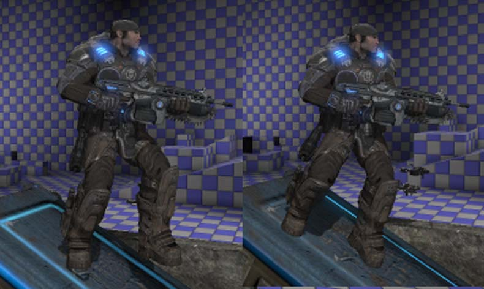
反動 (recoil)
GameSkelControl_Recoil
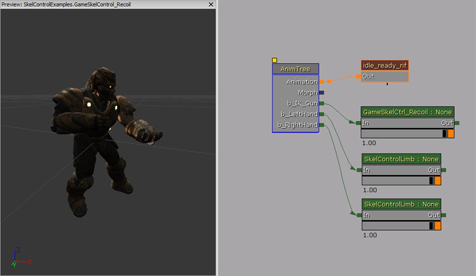
プロパティ
- Bone Space Recoil - true の場合は、照準 (aim) が無視され、反動だけがローカルのボーン空間で適用されます。
- Play Recoil - 反動の有効 / 無効を切り替えます。
- Recoil (反動) - 反動の情報です。
- Time Duration - 反動の振動が生じる長さ (秒数) です。
- Rot Amplitude - 回転の大きさを示すベクターです。
- Rot Frequency - 回転の頻度を示すベクターです。
- Rot Params - 回転のパラメータです。
- Loc Amplitude - 位置に関するオフセットの大きさを示すベクターです。
- Loc Frequency - 位置に関するオフセットの頻度を示すベクターです。
- Loc Params - 位置のパラメータです。
- Aim - [-1.f, 1.f : -1.f, 1.f] の範囲で表現される照準のベクターです。
UnrealScript で使用する方法
以下の例では、ポーンが Link Gun を 0.2 秒ごとに発砲し、その武器の発砲により腕が反動を受けます。
class SkelControlRecoilPawn extends Pawn
Placeable;
var() Name RecoilSkelControlName;
var() float FireRate;
var GameSkelCtrl_Recoil RecoilSkelControl;
simulated event PostInitAnimTree(SkeletalMeshComponent SkelComp)
{
Super.PostInitAnimTree(SkelComp);
if (SkelComp == Mesh)
{
RecoilSkelControl = GameSkelCtrl_Recoil(Mesh.FindSkelControl(RecoilSkelControlName));
}
SetTimer(FireRate, true, NameOf(PlayRecoil));
}
simulated event Destroyed()
{
Super.Destroyed();
RecoilSkelControl = None;
}
simulated function PlayRecoil()
{
if (RecoilSkelControl != None)
{
RecoilSkelControl.bPlayRecoil = true;
}
}
defaultproperties
{
FireRate=0.2f
Begin Object Class=SkeletalMeshComponent Name=PawnMesh
End Object
Mesh=PawnMesh
Components.Add(PawnMesh)
Physics=PHYS_Falling
Begin Object Name=CollisionCylinder
CollisionRadius=+0030.0000
CollisionHeight=+0072.000000
End Object
}
単一のボーン
SkelControlSingleBone
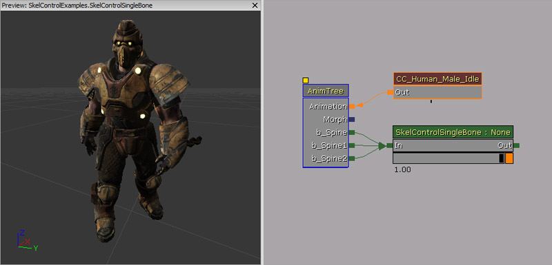
プロパティ
- Apply Translation - 平行移動に対して何らかの変更を加える必要があるか否かを示します。false の場合は、平行移動に関する他の全設定値が無視されます。
- Add Translation - true の場合は、指定された平行移動がアニメーションの結果に加えられます。true の場合は、アニメートされた平行移動の代わりとなります。
- Bone Translation - ボーンに適用する平行移動です。
- Bone Translation Space - 平行移動が適用される空間です。
- Translation Space Bone Name - Bone Translation Space が BCS_OtherBoneSpace である場合、このプロパティの値がボーン名として使用されます。
- Apply Rotation - Apply Translation の場合と同様に、回転を変化させてそれを有効にするためには true にセットしなければなりません。
- Add Rotation - true の場合は、アニメーションの結果に加えられます。false の場合は、既存の回転に取って代わります。
- Bone Rotation - ボーンに適用する実際の回転です。
- Bone Rotation Space - ボーンの回転を適用する基準座標系です。
- Rotation Space Bone Name - Bone Rotation Space が BCS_OtherBoneSpace である場合、このプロパティの値がボーン名として使用されます。
UnrealScript で使用する方法
次の例では、ポーンが背骨 (spine bone) を回転させることによって、あなたに向き合います。
class SkelControlSingleBonePawn extends Pawn
Placeable;
var() Name SkelControlSingleBoneName;
var SkelControlSingleBone SkelControlSingleBone;
simulated event PostInitAnimTree(SkeletalMeshComponent SkelComp)
{
Super.PostInitAnimTree(SkelComp);
if (SkelComp == Mesh)
{
SkelControlSingleBone = SkelControlSingleBone(Mesh.FindSkelControl(SkelControlSingleBoneName));
}
}
simulated event Destroyed()
{
Super.Destroyed();
SkelControlSingleBone = None;
}
simulated event Tick(float DeltaTime)
{
local PlayerController PlayerController;
local Rotator R;
Super.Tick(DeltaTime);
if (SkelControlSingleBone != None)
{
PlayerController = GetALocalPlayerController();
if (PlayerController != None && PlayerController.Pawn != None)
{
R = Rotator(Location - PlayerController.Pawn.Location);
SkelControlSingleBone.BoneRotation.Yaw = R.Yaw;
}
}
}
defaultproperties
{
Begin Object Class=SkeletalMeshComponent Name=PawnMesh
End Object
Mesh=PawnMesh
Components.Add(PawnMesh)
Physics=PHYS_Falling
Begin Object Name=CollisionCylinder
CollisionRadius=+0030.0000
CollisionHeight=+0072.000000
End Object
}
SkelControl_Handlebars
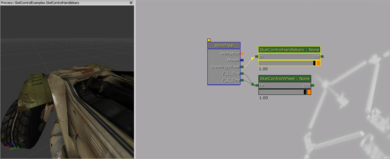
プロパティ
- Wheel Roll Axis - 車輪が回転するときの軸です。
- Handlebar Rotate Axis - ハンドル操作を行うときの軸です。
- Wheel Bone Name - ハンドル操作を制御する回転を有するボーンの名前です。
- Invert Rotation - 制御されるボーンに適用する回転を反転させます。
SkelControl_Multiply
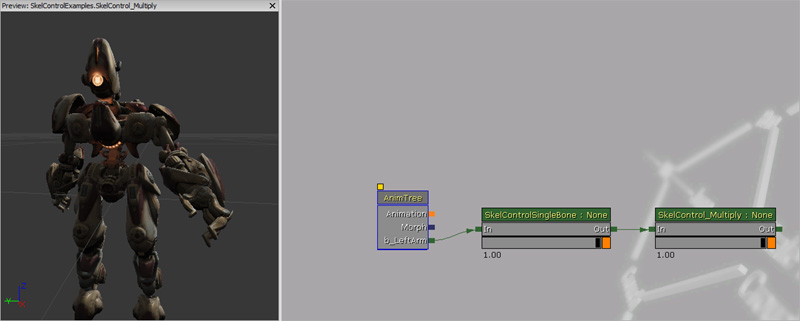
プロパティ
- Multiplier (乗数) - これより前に行われた骨格のブレンドに掛け合わせる数を表す float 値です。
SkelControl_TwistBone
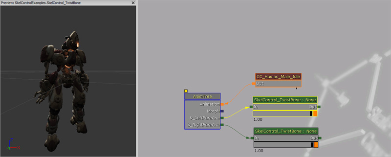
プロパティ
- Source Bone Name - 調べるソースボーン名です。たとえば、この SkelControl のためのソースとして左上腕のボーンを使用している場合は、この名前に左手のボーンをセットします。
- Twist Angle Scale - スケーリングする回転の角度の量を指定します。
SkelControlWheel

プロパティ
- WheelDisplacement - 車輪の垂直方向の動きを単にプレビューするためだけのものです。この数をセットすると、車輪が上がります。
- WheelMaxRenderDisplacement - 車輪が動く最大垂直距離を保持します。これによって、車輪がシャーシジオメトリにけっしてめり込まないようにすることができます。
- WheelRoll - WheelDisplacement と同様に、車輪のロール (回転) をプレビューするために使用されます。正の値をセットすると、自動車が前に進むときのように車輪がロールします。
- WheelRollAxis - どの車輪のボーンの軸を中心にして車輪がロールすべきかを指定します。
- WheelSteering - 車輪の方向転換の動きをプレビューするために使用されます。正の値をセットすると、車輪が右方向に動きます。
- WheelSteeringAxis - 車輪が方向転換する際に回転のために使用する車輪ボーンの軸を指定します。
- InvertWheelRoll - ロールのための回転を反転させます。
- InvertWheelSteering - 方向転換のための回転を反転させます。
UDKSkelControl_Damage / UTSkelControl_Damage
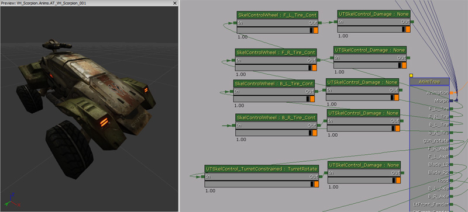
以下は、「Unreal」エディタ内にエクスポーズされる変数です。
- On Damage Active - OnDamage (ダメージ時) 機能がアクティブであるか否かを保持します。
- Damage Bone Scale - ダメージ時にボーンをスケーリングする値です。
- Damage Max - 骨格コントローラが、デスの前までに受けることができるダメージ量です。
- Activation Threshold - ヘルスターゲットがこの閾値を超えると、コントロールが無効になります。
- Control Str Follows Health - アクティベートされると、骨格コントローラは、残りヘルス値の結果としてコントロールの強度を生成します。それ以外は、常に最高の強度となります。
- Break Mesh - 骨格コントローラが破損した場合にスポーンする静的メッシュです。
- Break Threshold - スプリングが壊れそうに見え始めるときの閾値です。
- Break Time - 破壊しつつある状態から破壊が完了した状態までに要する時間の長さです。
- Default Break Dir - 破損分離する場合に、ベクターを作成するために使います。
- Damage Scale - スポーンされた部品のために使用するスケールです。(すなわち、静的メッシュのアセットが 1 個できますが、それは、中心線を軸にして対称な、ビークル上の異なる位置からスポーンされたものです)。
- PS_Damage On Break - この部分が破損した場合にスポーンするパーティクルシステムです。
- PS_Damage Trail - この部分が飛び散ったときにアタッチするパーティクルシステムです。(例 : 刺激臭のある黒煙のトレイル (trail) !)
- Break Speed - 部品が破損して飛び散り、ビークルをクリアする場合に、部品を押し上げる力です。
- On Death Active - OnDeath 機能が有効であるか否かを保持します。
- On Death Use For Secondary Explosion - 派生的爆発のための OnDeath 機能が有効であるか否かを保持します。
- Death Percent To Actually Spawn - OnDeath が有効である場合に、部品が実際にスポーンされる率です。
- Death Bone Scale - デス時にボーンをスケーリングする値です。
- Death Static Mesh - デス時にスポーンする静的メッシュです。
- Death Impulse Dir - スポーンされたビークルの部品が飛び散る方向です。
- Death Scale - スポーンされた部品のために使用するスケールです。(すなわち、静的メッシュのアセットが 1 個できますが、それは、中心線を軸にして対称な、ビークル上の異なる位置からスポーンされたものです)。
- PS_Death On Break - 当該の部品が壊れたときにスポーンするパーティクルシステムです。
- PS_Death Trail - この部品が飛び散るときにアタッチするパーティクルシステムです。(例 : 刺激臭のある黒煙のトレイル (trail) !)
UnrealScript の関数
- BreakApart(vector PartLocation, bool bIsVisible) - スプリングの破壊が決定されたときに、このイベントがトリガーされます。
- PartLocation - 部品のワールド位置です。
- bIsVisible - この部品が表示される状態を継続する場合は true です。
- BreakApartOnDeath(vector PartLocation, bool bIsVisible) - デス時にスプリングが破壊されたときに、このイベントがトリガーされます。
- PartLocation - 部品のワールド位置です。
- bIsVisible - この部品が表示される状態を継続する場合は true です。
- RestorePart() - 部品が回復 (heal) されたときに、このイベントがトリガーされます。
UDKSkelControl_DamageHinge / UTSkelControl_DamageHinge
以下は、「Unreal」エディタ内にエクスポーズされる変数です。
- Max Angle - ヒンジが開くことができる最大角度です。(単位 : 度)。
- Pivot Axis - ヒンジが開くときの中心となる軸です。
- AV Modifier (角速度のための乗数) - ヒンジの角度を計算するために使用される角速度が、この値と掛け合わされます。常に負の値にする必要があります。
UDKSkelControl_DamageSpring / UTSkelControl_DamageSpring
以下は、「Unreal」エディタ内にエクスポーズされる変数です。
- Max Angle - スプリングが開くことができる最大角度です。(単位 : 度)。
- Min Angle - スプリングが開くことができる最小角度です。(単位 : 度)。
- Falloff - スプリングがノーマルの状態に復帰する速さです。
- Spring Stiffness - スプリングの剛性です。
- AV Modifier (角速度のための乗数) - ヒンジの角度を計算するために使用される角速度が、この値と掛け合わされます。常に負の値にする必要があります。
UDKSkelControl_HoverboardSuspension / UTSkelControl_HoverboardSuspension
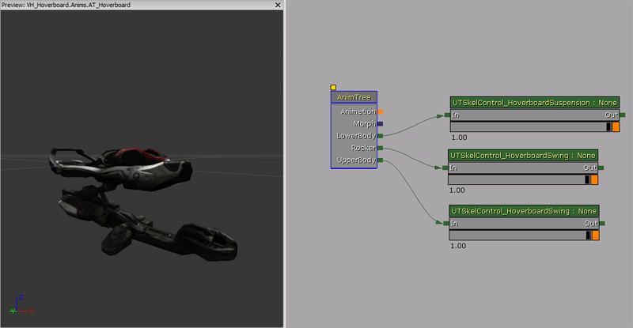
プロパティ
- Trans Ignore - 無視する垂直方向の平行移動の大きさです。
- Trans Scale - 垂直方向の平行移動をスケーリングします。
- Trans Offset - 垂直方向の平行移動オフセットする量です。
- Max Trans - 適用できる垂直方向の最大平行移動です。
- Min Trans - 適用できる垂直方向の最小平行移動です。
- Rot Scale - Y 軸上で適用される回転のスケールです。回転は、ホーバーボードの下側部分についているサスペンションをシミュレートするために使用されます。
- Max Rot - Y 軸上で利用できる最大の回転です。
- Max Rot Rate - 1 秒につき適用される回転の最大速度です。
UDKSkelControl_HoverboardSwing / UTSkelControl_HoverboardSwing
プロパティ
- Swing History Window - スイング履歴 (swing history) ウインドウのサイズをセットします。
- Swing Scale - スイングのスケールです。
- Max Swing - 両方向におけるスイングの最大サイズです。合成されたスイングを評価するために使用します。
- Max Use Vel - 両方向におけるベロシティ (速度) の最大サイズです。合成されたスイングを評価するために使用します。
UDKSkelControl_HoverboardVibration / UTSkelControl_HoverboardVibration
プロパティ
- Vib Frequency - 振動をシミュレートするために使用される振動数です。
- Vib Speed Amp Scale - リニアベロシティ (線速度) に基づいて振動を増幅するために使用されます。
- Vib Turn Amp Scale - アンギュラーベロシティ (角速度) に基づいて振動を増幅するために使用されます。
- Vib Max Amplitude - 振動を最大振幅に制限するために使用されます。
UDKSkelControl_HugGround / UTSkelControl_HugGround
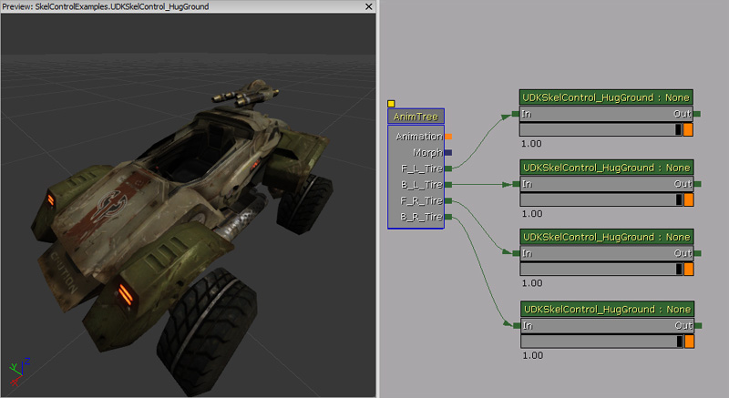
プロパティ
- Desired Ground Dist - ボーンからグラウンドまでの望ましい距離を指定します。
- Max Dist - ボーンがノーマルの位置から動くことができる最大距離です。
- Parent Bone (親ボーン) - コントロールされるボーンが常に親のボーンに向かって回転する際の、その親ボーンの名前です。(オプション)。
- Opposite From Parent - true の場合は、親ボーンと同じ方向ではなく、反対の方向にボーンを回転させます。
- XY Dist From Parent Bone (親ボーンからの XY 距離) - ParentBone が指定されている場合で、なおかつ、この値がゼロよりも大きい場合、コントロールされるボーンを、正確にこの数のユニット分だけ、親ボーンから離しておきます。
- Z Dist From Parent Bone (親ボーンからの Z 距離) - ParentBone が指定されている場合で、なおかつ、この値がゼロよりも大きい場合、コントロールされるボーンを、正確にこの数のユニット分だけ、親ボーンから離しておきます。
- Max Translation Per Sec - BoneTranslation (ボーンの平行移動) が毎秒変化する最大量です。
UDKSkelControl_PropellerBlade

プロパティ
- Max Rotations Per Second - プロペラがスピンできる最大回転速度を定義します。
- Spin Up Time - 最大速度までスピンするのに要する時間です。
- Counter Clockwise - true の場合は、プロペラの羽根が反時計回りになります。
UDKSkelControl_Rotate / UTSkelControl_Rotate

プロパティ
- Desired Bone Rotation - ボーンが回転する際に向かうべき望ましいボーンの回転を指定します。
- Desired Bone Rotation Rate - ボーンを回転させる際に適用すべき回転速度を指定します。
UDKSkelControl_SpinControl / UTSkelControl_SpinControl

プロパティ
- Degrees Per Second - 1 秒につき、ボーンを回転させる角度を定義します。
- Axis - 軸の値すべてがゼロの場合、コントローラは何もしません。軸が正規化されるため、ボーンは、Degrees Per Second (1 秒当たりの角度) を超えた回転はしません。
- X - X 軸上でボーンを回転させます。負の値を使用することによって、反時計回りに回転させることができます。
- Y - Y 軸上でボーンを回転させます。負の値を使用することによって、反時計回りに回転させることができます。
- Z - Z 軸上でボーンを回転させます。負の値を使用することによって、反時計回りに回転させることができます。
UDKSkelControl_TurretConstrained / UTSkelControl_TurretConstrained

プロパティ
- Constrain Pitch - true の場合は、ピッチがコンストレイン (制約) されます。
- Constrain Yaw - true の場合は、ヨーがコンストレイン (制約) されます。
- Constrain Roll - true の場合は、ロールがコンストレイン (制約) されます。
- Invert Pitch - true の場合は、ピッチが反転されます。
- Invert Yaw - true の場合は、ヨーが反転されます。
- Invert Roll - true の場合は、ロールが反転されます。
- Max Angle - 最大角度です。(単位 : 度)。
- Pitch Constraint - ピッチの最大コンストレイント (制約) です。
- Yaw Constraint - ヨーの最大コンストレイント (制約) です。
- Roll Constraint - ロールの最大コンストレイント (制約) です。
- Min Angle - 最小角度です。(単位 : 度)。
- Pitch Constraint - ピッチの最小コンストレイント (制約) です。
- Yaw Constraint - ヨーの最小コンストレイント (制約) です。
- Roll Constraint - ロールの最小コンストレイント (制約) です。
- Steps - データをコンストレインするさまざまな段階を各砲塔にもたせることができます。
- StepStartAngle - 現在の角度 (単位 : 度) がこの値と等しいか、この値よりも大きい場合に、当該のステップが有効になります。
- StepEndAngle - 現在の角度 (単位 : 度) がこの値と等しいか、この値よりも小さい場合に、当該のステップが有効になります。
- MaxAngle - 最大角度を指定します。(単位 : 度)。
- Pitch Constraint - ピッチの最大コンストレイント (制約) です。
- Yaw Constraint - ヨーの最大コンストレイント (制約) です。
- Roll Constraint - ロールの最大コンストレイント (制約) です。
- MinAngle - 最小角度を指定します。(単位 : 度)。
- Pitch Constraint - ピッチの最小コンストレイント (制約) です。
- Yaw Constraint - ヨーの最小コンストレイントです。
- Roll Constraint - ロールの最小コンストレイントです。
- Lag Degrees Per Second - 回転を望ましい回転に更新する際に、砲塔がどのくらいの遅れをとるのかを指定します。(単位 : 秒)。
- Pitch Speed Scale - ピッチの速度を変更します。
- Desired Bone Rotation - ボーンが回転して向かうべき望ましい回転を指定します。
- Fixed When Firing - true の場合は、関連する座席が現在発砲中であれば、砲塔が更新しません。
- Associated Seat Index - このコントロールが関連する座席のインデックスです。
- Reset When Unattended - true の場合は、プレイヤーによって砲塔がコントロールされていなければ、砲塔が 0、0、0 にリセットされます。
UnrealScript の関数
- OnTurretStatusChange(bool bIsMoving) - 砲塔のステータスが変更する場合に呼び出されるデリゲートです。
- bIsMoving - 砲塔が動いている場合は true です。
- InitTurret(Rotator InitRot, SkeletalMeshComponent SkelComp) - 砲塔を初期化して、現在の方向を、砲塔が指し示すべき方向とします。
- InitRot - 初期化して
- SkelComp - コントローラがアタッチされる骨格メッシュコンポーネントです。
- WouldConstrainPitch(int TestPitch, SkeletalMeshComponent SkelComp) - 指定されたピッチがコントローラによって制約されている場合は true を返します。
- TestPitch - テストすべきピッチです。(単位 : Unreal ローテータ単位)。
- SkelComp - コントローラがアタッチされる骨格メッシュコンポーネントです。
UDKSkelControl_VehicleFlap

プロパティ
- Max Pitch - ボーンに適用することができる、両方向におけるピッチの最大変化です。
UTSkelControl_CicadaEngine

プロパティ
- Forward Pitch - エンジンがピッチできる最大量を保持します。
- Back Pitch - エンジンがピッチできる最小量を保持します。
- Pitch Rate - ボーンがピッチを変化させる速度を保持します。
- Max Velocity - 最大ベロシティです。
- Min Velocity - 最小ベロシティです。
- Max Velocity Pitch Rate Multiplier (最大ベロシティ ピッチ速度乗数) - ピッチの移動速度を計算するために使用される、ピッチの速度のためのモディファイアです。
UTSkelControl_JetThruster
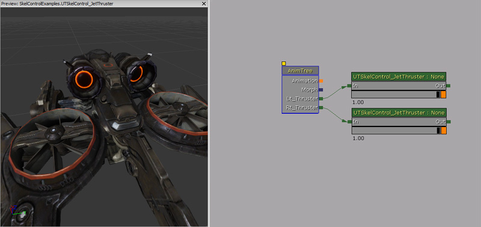
プロパティ
- Max Forward Velocity - 最大前進ベロシティ (速度) を保持します。
- Blend Rate - 望ましいコントロールの強さをブレンドする速度です。
UTSkelControl_MantaBlade
UTSkelControl_MantaFlaps
UTSkelControl_Oscillate

プロパティ
- Max Delta (最大差分) - ボーンを動かす最大量です。
- Period - 始点 (差分なし) から MaxDelta まで達するのに要する時間の長さです。
- Current Time - オシレーション (振幅) の現在の時間です。ただし、通常、この値を「Unreal」エディタで調整する必要はありません。
未分類事項
SkelControl_CCDIK

プロパティ
- Num Bones - 対象となるボーンの数です。
- Max Per Bone Iterations (ボーン 1 個当たりの最大イテレーション) - パフォーマンスを制御するためのものです。ボーン 1 個につき許容される反復計算の回数を指定します。
- Precision - 目標に到達したとみなされる距離 (単位 : Unreal 単位) を指定します。当然のことながら、誤差をある程度許容できる場合は、このノードのパフォーマンスに対してプラスとなります。
- Start From Tail - チェーンの前から開始するか、後から開始するかを指定します。ビジュアル的に異なる結果がもたらされます。
- Angle Constraint (角度のコンストレイント) - ラジアン角の配列です。各ボーンに許容される最大角度を指定します。
- Max Angle Steps - 各ステップに許容される最大回転角です。ボーンチェーンに沿って一様に小さな回転ステップを強制するため、ラッピング効果を防ぐことができます。
UnrealScript で使用する方法
次の例では、キャラクターの腕にアタッチされているチェーンが、プレイヤーのポーンによって表現されているあなたを指し示そうとします。
class SkelControlCCDIKPawn extends Pawn
Placeable;
var() Name LeftSkelControlCCDIKName;
var() Name RightSkelControlCCDIKName;
var SkelControl_CCD_IK LeftSkelControlCCDIK;
var SkelControl_CCD_IK RightSkelControlCCDIK;
simulated event PostInitAnimTree(SkeletalMeshComponent SkelComp)
{
Super.PostInitAnimTree(SkelComp);
if (SkelComp == Mesh)
{
LeftSkelControlCCDIK = SkelControl_CCD_IK(Mesh.FindSkelControl(LeftSkelControlCCDIKName));
RightSkelControlCCDIK = SkelControl_CCD_IK(Mesh.FindSkelControl(RightSkelControlCCDIKName));
}
}
simulated event Destroyed()
{
Super.Destroyed();
LeftSkelControlCCDIK = None;
RightSkelControlCCDIK = None;
}
simulated event Tick(float DeltaTime)
{
local PlayerController PlayerController;
Super.Tick(DeltaTime);
if (LeftSkelControlCCDIK != None && RightSkelControlCCDIK != None)
{
PlayerController = GetALocalPlayerController();
if (PlayerController != None && PlayerController.Pawn != None)
{
LeftSkelControlCCDIK.EffectorLocation = PlayerController.Pawn.Location;
RightSkelControlCCDIK.EffectorLocation = PlayerController.Pawn.Location;
}
}
}
defaultproperties
{
Begin Object Class=SkeletalMeshComponent Name=PawnMesh
End Object
Mesh=PawnMesh
Components.Add(PawnMesh)
Physics=PHYS_Falling
Begin Object Name=CollisionCylinder
CollisionRadius=+0030.0000
CollisionHeight=+0072.000000
End Object
}
SkelControlLookAt
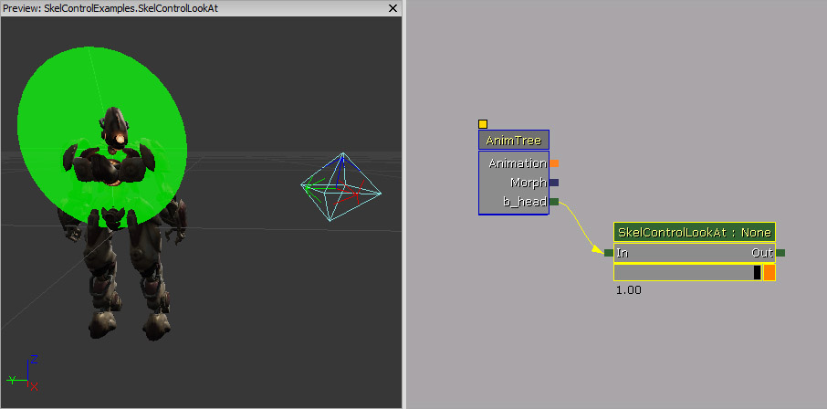
プロパティ
- Target Location - ボーンが向くべき、空間内の位置です。
- Target Location Space - Target Location が定義される空間を指定します。
- Target Space Bone Name - Target Location Space が、BCS_OtherBoneSpace である場合、このプロパティの値が、ボーンの名前として使用されます。
- Look At Axis - コントロールされるボーンがターゲットに向かなければならない場合に使用する軸です。
- Invert Look At Axis - Look At Axis に対して、ターゲットに向くのではなく、ターゲットから向きをそらすように指示します。
- Define Up Axis - false の場合は、 Look At Axis をターゲットに向かせるのに必要となる最小の回転をコントロールが見つけます。その軸を中心とする回転は、依然として、アニメーションに由来することになります。true の場合は、ボーンのための垂直軸も定義されます。そのため、ボーンの向きは、コントローラによって完全に定義されます。
- Up Axis - Define Up Axis が true の場合は、このプロパティの値が、ワールド空間で上に向いていなければならないボーンの軸となります。
- Invert Up Axis - Up Axis が上ではなく下を向かなければならない場合に使用します。
- Enable Limit - ボーンがターゲットを追って回転することができる最大角度を制限する場合のときに使用します。
- Show Limit - コントロールが選択された際に、3D ビューポート内で緑色の制限コーンを描画すべき場合に使用します。
- Max Angle - ボーンが参照ポーズから離れて回転することが許される最大角度 (単位 : 度) を指定します。
- Dead Zone Angle - ターゲットが現在の回転の死角に入っている場合に、更新が行われません。ボーンが回転するのは、ターゲットが死角から出ていった場合に限ります。
UnrealScript で使用する方法
以下の例では、ポーンが、あなた (正確には、あなたがコントロールするポーン) を見ます。あなたがこのビュー範囲から出ると、このポーンは、元に戻ってブレンドされることによって、前方を向くようになります。
class SkelControlLookAtPawn extends Pawn;
var() Name SkelControlLookAtName;
var() float EyeOffset;
var SkelControlLookAt SkelControlLookAt;
simulated event PostInitAnimTree(SkeletalMeshComponent SkelComp)
{
Super.PostInitAnimTree(SkelComp);
if (SkelComp == Mesh)
{
SkelControlLookAt = SkelControlLookAt(Mesh.FindSkelControl(SkelControlLookAtName));
}
}
simulated event Destroyed()
{
Super.Destroyed();
SkelControlLookAt = None;
}
simulated event Tick(float DeltaTime)
{
local PlayerController PlayerController;
Super.Tick(DeltaTime);
if (SkelControlLookAt != None)
{
PlayerController = GetALocalPlayerController();
if (PlayerController != None && PlayerController.Pawn != None)
{
SkelControlLookAt.TargetLocation = PlayerController.Pawn.Location + (Vect(0.f, 0.f, 1.f) * EyeOffset);
}
}
}
defaultproperties
{
Begin Object Class=SkeletalMeshComponent Name=PawnMesh
End Object
Mesh=PawnMesh
Components.Add(PawnMesh)
Physics=PHYS_Falling
Begin Object Name=CollisionCylinder
CollisionRadius=+0030.0000
CollisionHeight=+0072.000000
End Object
}
SkelControlSpline

プロパティ
- Spline Length - 階層を上にあがり、スプラインにフィットさせるために変更するボーンの数です。
- Spline Bone Axis - スプラインに沿った向きをとらせるボーンの軸です。
- Invert Spline Bone Axis - Spline Bone Axis を反転しなければならない場合に使用します。
- End Spline Tension - スプラインの端 (コントロールされているボーンに近い方の端) のカーブを制御します。
- Start Spline Tension - スプラインの始点のカーブを制御します。
- Bone Rot Mode - スプラインの全長に沿ってあるボーンをどのように回転させるかを制御します。以下は詳細な情報です。
- SCR_NoChange - ボーンの回転が変更されません。単にスプライン上に位置するように平行移動します。
- SCR_AlongSpline - ボーンが回転して、SplineBoneAxis がスプラインに沿った方向に向きます。
- SCR_Interpolate - 連続する各ボーンの回転が、チェーンの両端にあるボーンの回転におけるブレンドとなります。
SkelControlTrail

プロパティ
- Chain Length - 階層内でコントロールされるボーンよりも上に位置する、変更すべきボーンの数を指定します。
- Chain Bone Axis - トレイルの方向を決めるボーンの軸です。
- Invert Chain Bone Axis - Chain Bone Axis で指定された方向を反転します。
- Limit Stretch - 参照ポーズの長さ以上にボーンが伸びることができる量を制限します。
- Actor Space Fake Vel - フェイクのベロシティ (速度) をアクタ内に適用するのか、ワールド空間に適用するのかを指定します。
- Trail Relaxation - ボーンがどのくらい速くアニメートされた位置に落ち着くかを指定します。
- Stretch Limit - Limit Stretch が有効な場合、参照ポーズにおいてボーンがその長さをどのくらいの間超えていられるかを指定します。
- Fake Velocity - ボーンに適用するフェイクのベロシティ (速度) です。
例
次の例では、トレイルが有するフェイクの Z ベロシティ (速度) が、2 秒ごとに上下間でブレンドされます。
class SkelControlTrailPawn extends Pawn
Placeable;
var() Name SkelControlTrailLeftName;
var() Name SkelControlTrailRightName;
var() float SinkVelocityZ;
var() float FloatVelocityZ;
var SkelControlTrail SkelControlTrailLeft;
var SkelControlTrail SkelControlTrailRight;
simulated event PostInitAnimTree(SkeletalMeshComponent SkelComp)
{
Super.PostInitAnimTree(SkelComp);
if (SkelComp == Mesh)
{
SkelControlTrailLeft = SkelControlTrail(Mesh.FindSkelControl(SkelControlTrailLeftName));
SkelControlTrailRight = SkelControlTrail(Mesh.FindSkelControl(SkelControlTrailRightName));
}
SetTimer(2.f, false, NameOf(SinkTrail));
}
simulated event Destroyed()
{
Super.Destroyed();
SkelControlTrailLeft = None;
SkelControlTrailRight = None;
}
simulated event Tick(float DeltaTime)
{
Super.Tick(DeltaTime);
if (SkelControlTrailLeft != None && SkelControlTrailRight != None)
{
if (IsTimerActive(NameOf(FloatTrail)))
{
SkelControlTrailLeft.FakeVelocity.Z = Lerp(FloatVelocityZ, SinkVelocityZ, GetTimerCount(NameOf(FloatTrail)) / GetTimerRate(NameOf(FloatTrail)));
SkelControlTrailRight.FakeVelocity.Z = Lerp(FloatVelocityZ, SinkVelocityZ, GetTimerCount(NameOf(FloatTrail)) / GetTimerRate(NameOf(FloatTrail)));
}
else if (IsTimerActive(NameOf(SinkTrail)))
{
SkelControlTrailLeft.FakeVelocity.Z = Lerp(SinkVelocityZ, FloatVelocityZ, GetTimerCount(NameOf(SinkTrail)) / GetTimerRate(NameOf(SinkTrail)));
SkelControlTrailRight.FakeVelocity.Z = Lerp(SinkVelocityZ, FloatVelocityZ, GetTimerCount(NameOf(SinkTrail)) / GetTimerRate(NameOf(SinkTrail)));
}
}
}
simulated function FloatTrail()
{
if (SkelControlTrailLeft != None && SkelControlTrailRight != None)
{
SkelControlTrailLeft.FakeVelocity.Z = FloatVelocityZ;
SkelControlTrailRight.FakeVelocity.Z = FloatVelocityZ;
}
SetTimer(2.f, false, NameOf(SinkTrail));
}
simulated function SinkTrail()
{
if (SkelControlTrailLeft != None && SkelControlTrailRight != None)
{
SkelControlTrailLeft.FakeVelocity.Z = SinkVelocityZ;
SkelControlTrailRight.FakeVelocity.Z = SinkVelocityZ;
}
SetTimer(2.f, false, NameOf(FloatTrail));
}
defaultproperties
{
Begin Object Class=SkeletalMeshComponent Name=PawnMesh
End Object
Mesh=PawnMesh
Components.Add(PawnMesh)
Physics=PHYS_Falling
Begin Object Name=CollisionCylinder
CollisionRadius=+0030.0000
CollisionHeight=+0072.000000
End Object
}
UDKSkelControl_CantileverBeam / UTSkelControl_CantileverBeam
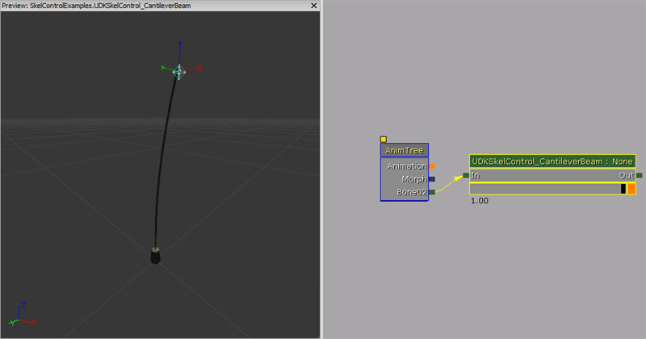
プロパティ
- Initial World Space Goal Offset (初期ワールド空間目標のオフセット) - (ローカルのボーン空間における) World Space Goal (ワールド空間の目標) の開始位置を得るために、最初のボーンから進むべき地点です。
- Spring Stiffness - スプリングシミュレーション上で適用する剛性を定義します。
- Spring Damping - スプリングシミュレーション上で適用する減衰を定義します。
-
Percent Beam Velocity Transfer - 片持ち梁の先端が、ベースのベロシティ (速度) の何％で動くかを指定します。
UnrealScript の関数
- EntireBeamVelocity() - 片持ち梁全体が移動する速度を返します。(タンクなどを扱うためのデリゲートです。そのような場合は、砲塔の動きよりもタンク全体の動きによる影響度を下げる必要があります)。
UDKSkelControl_LockRotation / UTSkelControl_LockRotation
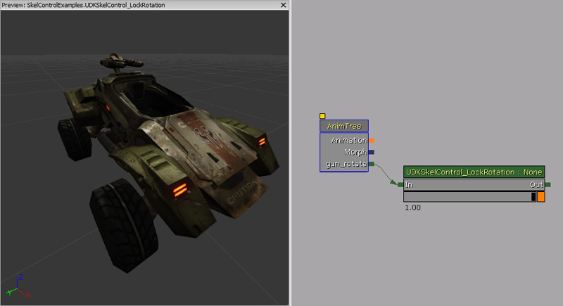
プロパティ
- Lock Pitch - ボーンの回転に影響を与えるために、ボーンの回転に含まれるピッチ成分を固定します。
- Lock Yaw - ボーンの回転に影響を与えるために、ボーンの回転に含まれるヨー成分を固定します。
- Lock Roll - ボーンの回転に影響を与えるために、ボーンの回転に含まれるロール成分を固定します。
- Lock Rotation - このプロパティの値に回転を固定します。
- Max Delta - Lock Rotation に達するために、元の回転を変更できる最大量です。
- Lock Rotation Space - 回転が行われる空間です。
- Rotation Space Bone Name - LockRotationSpace が BCS_OtherBoneSpace である場合に、使用されるボーン名です。
UDKSkelControl_LookAt / UTSkelControl_LookAt
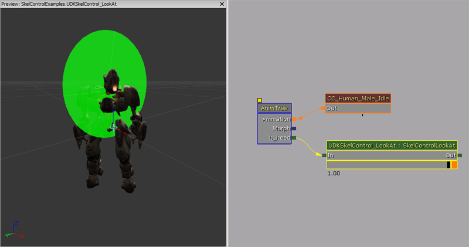
プロパティ
- Limit Yaw - true の場合は、ヨーの軸に制限を加えます。それ以外の場合は、制限が無視されます。
- Limit Pitch - true の場合は、ピッチの軸に制限を加えます。それ以外の場合は、制限が無視されます。
- Limit Roll - true の場合は、ロールの軸に制限を加えます。それ以外の場合は、制限が無視されます。
- Yaw Limit - ヨーの軸のために使用する角度の制限です。(単位 : 度)。
- Pitch Limit - ピッチの軸のために使用する角度の制限です。(単位 : 度)。
- Roll Limit - ロールの軸のために使用する角度の制限です。(単位 : 度)。
- Show Per Axis Limits - true の場合は、軸ごとの制限を表すコーンを描画します。
UDKSkelControl_MassBoneScaling / UTSkelControl_MassBoneScaling

プロパティ
- Bone Scales - 骨格メッシュに含まれるボーンのためのスケールです。この配列のインデックスは、骨格メッシュのインデックスと一致します。ボーンのインデックスを調べるには、当該の骨格メッシュのための AnimSet エディタを開いて探します。ボーンのインデックスは、ボーン名のとなりにある数字で示されています。

UnrealScript の関数
- SetBoneScale(name BoneName, float Scale) - 名前を使用してボーンのスケールをセットします。このコントローラは、AnimTree 内で指定されたボーンと接続することによって、効力をもつようにする必要があります。
- Bone Name - 影響を与えるボーンの名前です。
- Scale - 影響を与えるボーンのスケールです。
- GetBoneScale(name BoneName) - 指定されたボーンのために、コントローラがもっているスケールを返します。ボーンのスケールに影響を及ぼす他のコントローラについては、考慮しません。
- Bone Name - ボーンにスケールを返すために使用するボーンの名前です。
ダウンロード
- このドキュメントで使用されているコンテンツは、 ここから ダウンロードできます。